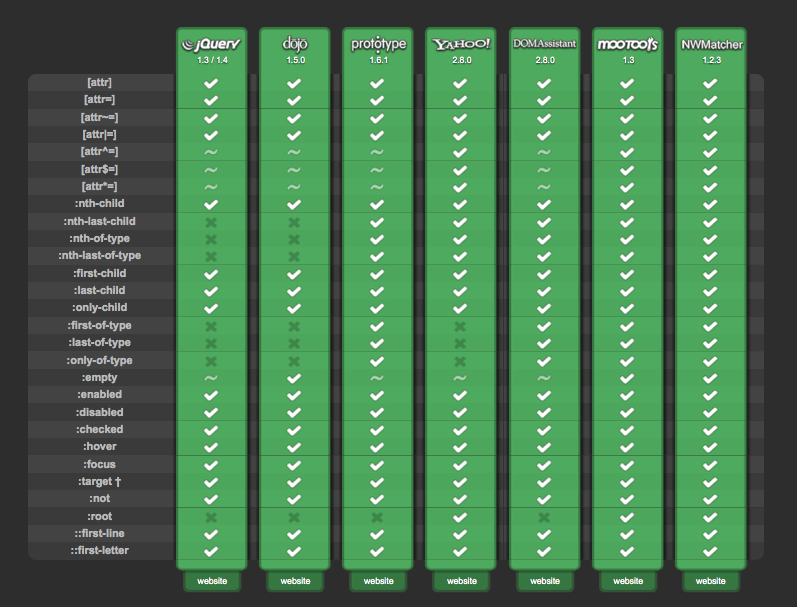
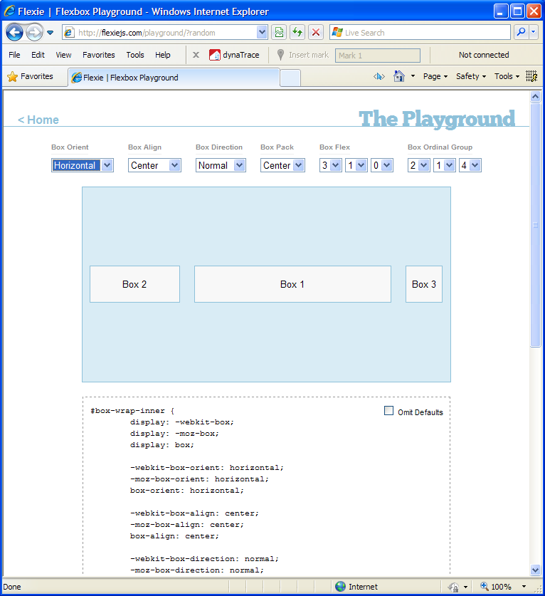

CSS Polyfills
Jason Johnston
@lojjic, @css3pie
http://lojjic.github.com/css-summit-polyfills


Whoziwhutzit?
Also known as:
shim, shiv, patch, hack
Term “polyfill” coined by Remy Sharp:
a piece of code (or plugin) that provides the technology that you, the developer, expect the browser to provide natively
Polyfill
FILL: fills in missing standard features or APIs when not natively available
POLY: can use multiple fallbacks depending on the browser and environment
Why are they needed?
“OldIE”
...but also newer browsers, to keep up with the pace of new features.
Wait a minute...
Don't most libraries smooth out browser incompatibilities?
Abstraction
You use standard code, not new APIs
Goal is to be invisible
Ultimate goal is to become obsolete
Reasons To Use A Polyfill
- Expand your audience
- Speed up development time
- More time available for better things
- Only have to learn one API
- Smaller, simpler codebase
- Stop hurting capable browsers!

http://modernizr.com
- Not a polyfill!
- Makes polyfills easier to use
- Extensive feature detection library
- Includes YepNope (http://yepnopejs.com)
<html class="js no-flexbox no-flexbox-legacy no-canvas no-canvastext
no-webgl no-touch no-geolocation postmessage no-websqldatabase
no-indexeddb hashchange no-history draganddrop no-websockets
no-rgba no-hsla no-multiplebgs no-backgroundsize no-borderimage
no-borderradius no-boxshadow no-textshadow no-opacity
no-cssanimations no-csscolumns no-cssgradients no-cssreflections
no-csstransforms no-csstransforms3d no-csstransitions fontface
generatedcontent no-video no-audio no-localstorage
no-sessionstorage no-webworkers no-applicationcache no-svg
no-inlinesvg no-smil no-svgclippaths">
- Many CSS3 features detected
- Allows progressive enhancement, conditional polyfill fine-tuning
Conditional loading of polyfill scripts
Modernizr.load([{
test: Modernizr.flexbox,
nope: '/polyfills/flexie/flexie.js'
}, ... ]);
Most CSS polyfills have their own way of doing this
Also from the Modernizr community:
The All-In-One Entirely-Not-Alphabetical No-Bullshit Guide to HTML5 Fallbacks
http://bit.ly/polyfills
Things Polyfills Do
- HTML5 Elements
- JavaScript Language Features
- HTML5 JavaScript APIs
- CSS Selectors
- CSS Vendor Prefixes
- CSS Rendering - box decorations, layout, transforms, etc.
Ways CSS Polyfills Work
1. Client-side CSS Parsing/Rewriting
- For when CSS is not recognized by the browser
- Advanced selectors
- Media queries
- Prefix insertion
- CSS fetched via XHR — same-domain limitation
- Parsed via RegExp, rewritten, and original stylesheet replaced with new
- Processing time grows with size of CSS
Ways CSS Polyfills Work
2. Server-side CSS Parsing/Rewriting
- Some of the same scenarios as client-side
- No extra client-side processing time
- Limited by no access to the runtime environment
- Conditionally load CSS to avoid hurting capable browsers
Ways CSS Polyfills Work
3. DOM Querying
- DOM is traversed looking for certain elements/attributes, then modified
- Often used along with client-side CSS parsing
- Must wait for document ready
- Best for static content, difficult responding to dynamic DOM changes
Ways CSS Polyfills Work
4. IE Behaviors (.htc)
- Script attached to elements via CSS "behavior" property
- IE only!
- Responds automatically to insertion/deletion of content
- Acts when element is ready, doesn't have to wait for whole document
- Gotchas: same-domain limitation, content-type header, path relative to HTML file
- Processing time grows with number of matching DOM elements
Ways CSS Polyfills Work
4. IE Behaviors (.htc)
.my-selector {
behavior: url(polyfill.htc);
}
<PUBLIC:COMPONENT lightWeight="true">
<PUBLIC:ATTACH EVENT="oncontentready" FOR="element" ONEVENT="init()" />
<PUBLIC:ATTACH EVENT="ondocumentready" FOR="element" ONEVENT="init()" />
<PUBLIC:ATTACH EVENT="ondetach" FOR="element" ONEVENT="cleanup()" />
<script type="text/javascript">
//JS code
</script>
</PUBLIC:COMPONENT>
Let's explore a few...
html5shim / html5shiv
http://code.google.com/p/html5shiv/
- OldIE incorrectly parses unknown elements:
<section>
<p>...</p>
</section>
becomes
<section></section>
<p>...</p>
- ...unless you
createElement it!
document.createElement('section');
- Also fixes printing and adds default HTML5 element styles
<!--[if lt IE 9]>
<script src="/polyfills/html5shiv.js"></script>
<![endif]-->
Selectivizr
http://selectivizr.com/
- Parses CSS files for wide range of selectors
- Queries document for elements matching those selectors
- Uses one of many external JavaScript selector libraries
- Runs on document ready, not dynamic

-prefix-free
http://leaverou.github.com/prefixfree/
- Polyfill for modern browsers, does nothing in OldIE
- Fills in vendor-prefixed CSS3 property names and values so you don't have to
- Translates final CSS3 gradient syntax to old ones
- Loads stylesheets via XHR — same-domain limitation
Respond.js
https://github.com/scottjehl/Respond
- Adds support for min/max-width based CSS media queries back to IE6
- Lightweight, no external dependencies
Flexie
http://flexiejs.com/
- Implements CSS3 flexible box model in IE and Opera
- Matches the old spec not the new
- Uses Selectivizr's engine for parsing the CSS and querying for matching elements

CSS Sandpaper
https://github.com/zoltan-dulac/cssSandpaper
- Maps CSS3 properties to IE filters
transformbox-shadowlinear-gradienttext-shadowopacity
- Slightly non-standard code (
-sand-box-shadow etc.)
- Some filters do not render accurately
CSS3 PIE
http://css3pie.com/
- Renders several CSS3 box decoration properties in IE 6-9:
- border-radius
- box-shadow
- border-image
- linear-gradient backgrounds
- multiple backgrounds
- IE .htc behavior, or optional JS file
- Renders using VML in OldIE, SVG in IE9
Questions so far?
The big question
Q: Should I use a polyfill?
A: It depends.
Considerations
- Browser stats of target audience
- System speed of target audience
- Performance impact of the polyfill
- Performance impact of not using the polyfill
- Compatibility of multiple polyfills
- Debugging time
- How necessary are the features?
Graceful Degradation
- Usually the best choice, but not always an option.
- Don't forget the graceful part!
- What will users do if their experience is degraded?
- Users don't switch browsers, they switch sites.
Decisions, decisions...
1. “Is graceful degradation acceptable, or can I convince the necessary parties to allow it?”
YES? Great, do it!
NO? ...
Decisions, decisions...
2. “Would implementing the design require sending hacky markup, extra images, or dumbed-down code to capable browsers?”
NO? Then we're all good.
YES? Then consider using a polyfill...
Decisions, decisions...
3. “Would the polyfill create unacceptable performance or compatibility issues?”
NO? Yay! Polyfill FTW! :)
YES? Sorry, you're on your own. :(
Assessing Performance
Polyfill creators don't typically publish performance stats; it's up to you to measure.
Common Factors
- Most polyfills use JavaScript which will always be slower than native
- Old browsers are also those with the slowest JS / DOM / rendering engines
- Downloading polyfill code takes time; always check its size
Assessing Performance
Polyfills that rewrite CSS
- Usually fetch the CSS via XHR, might not be cached
- RegExp parsing can be slow
- Parsing time grows with size of the CSS file
- Original CSS might already have been parsed and applied by the browser
Assessing Performance
Polyfills that query the DOM
- IE < 8 does not have
querySelectorAll, must use JS traversal
- The larger the DOM the slower the query
- Reading certain properties (e.g.
offsetWidth) causes reflow
- Writing certain properties (e.g.
className) causes reflow
Assessing Performance
Polyfills that render
- Layout calculations can be intense
- The more things it has to render the slower the rendering
- Reading and writing to the DOM causes reflow
Compatibility Concerns
- Polyfills that modify the DOM can easily collide with other polyfills
- Other libraries that modify the DOM can easily create conflicts
- Polyfills that parse/rewrite CSS typically cannot be used together
- Using
!important in CSS means polyfills can't modify .style
Test, test, test!
In Conclusion,
- CSS polyfills can:
- Greatly reduce development time and effort
- Keep hacks out of capable browsers
- Improve overall user experience
- But you need to weigh the pros and cons.
- Graceful degradation is always the first choice.
- Polyfills will be with us long after OldIE is ancient history.
Thank you! Questions?
Jason Johnston
@lojjic, @css3pie